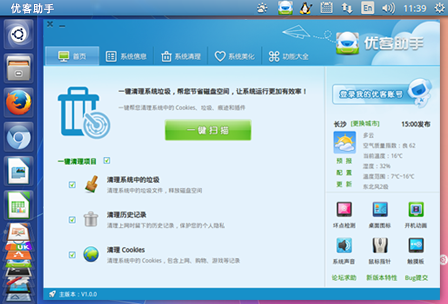

<div class="header"><h1 class="slidetitle">优客助手</h1></div>

<div class="main">

<div class="text">

<div>
<p>专为Ubuntu Kylin用户打造的系统级管理与配置工具，具备强大的系统信息展示、一键垃圾清理、系统定制美化等功能，让您的桌面更加流畅、易用而富有个性！</p>
</div>

<div class="featured">
<h2 class="subtitle">包含软件</h2>
<ul>
	<li>
	
	<p class="caption">youker-assistant</p>
	</li>
</ul>
</div>

</div>



</div>
